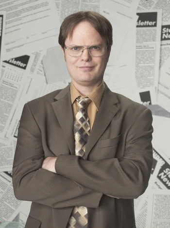
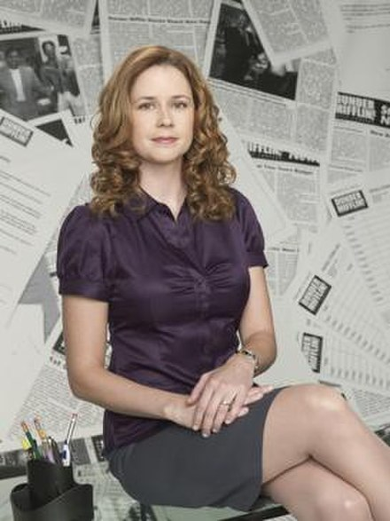
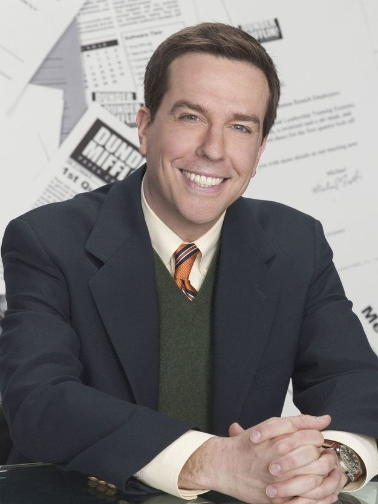
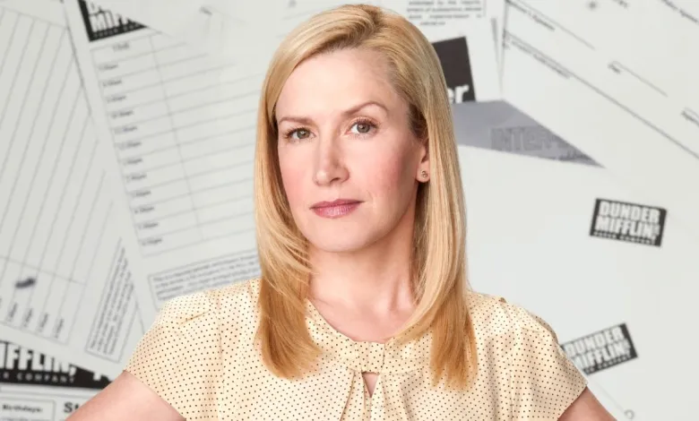

Nuestro Staff
Gerencia:
Michael Scott
Michael comenzó en Dunder Mifflin como vendedor en la década de 1990. En "El discurso de Dwight", muestra la placa y el certificado que recibió en 1996 y 1997 como "Mejor vendedor del año" El afirma haber adquirido la mitad de la base de clientes de la sucursal de Scranton. Fundo The Michael Scott Paper Company que fue adquirida por el grupo Dunder Mifflin mas tarde. Michael cree que una oficina debería ser el "lugar donde los sueños se hacen realidad". Es leal a la empresa y honestamente trata de ayudar a sus empleados cuando cree que tienen un problema. Fue ascendido a gerente regional a una edad temprana, pero aparte de su magistral arte de vender, Michael carece de casi cualquier otra habilidad, ya sea de gestión o de otro tipo.
Aunque su posición como gerente regional le otorga una amplia autoridad para tomar decisiones sobre las operaciones de la sucursal, a menudo coloca esas responsabilidades en un segundo plano frente a su deseo de ser amigo de sus empleados. Por otro lado, también se extralimita en su autoridad al organizar eventos que la empresa desaprueba, como The Dundies y varias fiestas de oficina al año, induciendo fiestas de cumpleaños para cada empleado a pesar de que solo se le permite el presupuesto para una al año. A pesar de su ineptitud, Michael es propenso a breves episodios de perspicacia sorprendente y se muestra que tiene un corazón bondadoso, ya que muestra un afecto profundo y familiar hacia las personas que trabajan en la sucursal de Scranton.
Equipo de Ventas
Jim Harper

Se le presenta como representante de ventas en la sucursal de Scranton de la empresa de distribución de papel Dunder Mifflin, antes de transferirse temporalmente a la sucursal de Stamford en la tercera temporada. Tras la fusión de las sucursales de Scranton y Stamford, se convierte en subgerente regional y luego co-gerente junto con Michael Scott, para luego volver a ser el vendedor numero uno de Scranton. Es inteligente y carismatico. Esta casado con Pam Beesley
Dwight Scrutte
Fue vendedor y asistente del gerente regional en la empresa de distribución de papel Dunder Mifflin antes de su ascenso a asistente del gerente regional y luego a gerente regional. También dirige un bed and breakfast en Schrute Farms, es propietario de una plantación de remolacha y, a partir de la 2006, propietario del parque empresarial en el que se encuentra Dunder Mifflin, Scranton. Es conocido por su falta de habilidades sociales y sentido común y su amor por las artes marciales y el sistema de justicia.
Pam Beesley
Pam comienza como recepcionista en la empresa de distribución de papel Dunder Mifflin, tras su renuncia se une a Michael para formar "The Michael Scott Paper Company" y se convierte en vendedora. A partir de sus años trabajando en la recepción, Pam se ha familiarizado bien con el personal de Dunder-Mifflin y constantemente se demuestra que tiene un conocimiento profundo de las personalidades de sus compañeros de trabajo, incluidos los individuos más excéntricos Dwight Schrute y Michael Scott. Esta casada con Jim Harper.
Andy Bernard
Se le presenta como director regional a cargo de ventas en la sucursal de Stamford de la empresa de distribución de papel Dunder Mifflin en el estreno de la tercera temporada cuando Jim Halpert se transfiere y finalmente se fusiona con la sucursal de Scranton en el episodio "La fusión" más adelante en la temporada.
Equipo Contable
Oscar Martinez

Martínez es contador en la oficina de Scranton, Pensilvania, de la empresa de distribución de papel Dunder Mifflin. Sus padres son de México y se mudaron a los Estados Unidos un año antes de que él naciera. Su personaje fue descubierto por su jefe Michael Scott en "Gay Witch Hunt", el episodio de estreno de la tercera temporada dedicado a la salida.[6] Sin embargo, se dio a entender que el personaje era gay en el episodio de la segunda temporada "El secreto", cuando Dwight lo descubre fingiendo estar enfermo para pasar el día con su novio. Dwight no se dio cuenta de este detalle, ya que estaba obsesionado con demostrar que Oscar era no enfermo En episodios anteriores, muchos compañeros de trabajo le atribuyen erróneamente varios estereotipos mexicanos (por ejemplo, estar involucrado en carteles de la droga), pero después de su salida, los estereotipos se centran más en que es gay, particularmente por Michael, lo que puede explicar su relación conflictiva.
Kevin Malone

Kevin es uno de los personajes secundarios más destacados durante la primera temporada. En el episodio "Baloncesto", mientras forma un equipo de baloncesto para un partido contra los empleados del almacén, Michael ignora la súplica de Kevin de unirse al equipo. Más tarde se revela que Kevin es un excelente jugador de baloncesto. En la segunda temporada, Kevin comienza una relación con Stacey, a quien luego le propone matrimonio. Kevin está abatido el día de San Valentín cuando no sabe dónde está ella, aunque en una escena eliminada, se pone muy feliz cuando ella llama y le dice que está de vuelta en la ciudad. En "El día de llevar a tu hija al trabajo", Kevin lleva a la hija de Stacey, Abby, a la oficina, donde rápidamente se hace amiga de Jim.
Angela Martin
Se la presenta como contadora principal, jefa del Comité de Planificación del Partido y oficial de seguridad en la sucursal de Scranton de Dunder Mifflin. Su personaje sirve como la cara engreída y más profesional de la rama. Comienza una relación con su compañero de trabajo Dwight Schrute, con quien comienza a salir en secreto en la segunda temporada, tiene un hijo en la octava y se casa en la novena. Esta relación continúa durante la cuarta temporada mientras ella está comprometida con el vendedor Andy Bernard. También tiene un matrimonio de corta duración con el senador del estado de Pensilvania, Robert Lipton, quien inicialmente se cree que es el padre de su hijo, Phillip. Dwight a menudo se refería a ella como "Monkey" para tratar de mantener su relación en secreto.